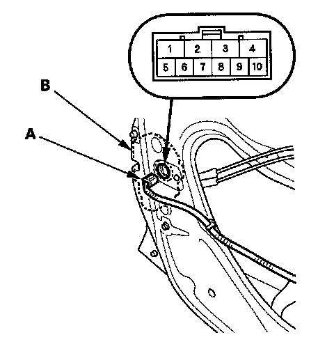

Door Key Cylinder Switch Test
Door Key Cylinder Switch Test1. Remove the driver's door panel.
- 2-door.
- 4-door.

2. Disconnect the 10P connector (A) from the key cylinder switch (B).
3. Check for continuity between the terminals.
- There should be continuity between the No.9 and No.5 terminals when the door key cylinder switch is in LOCK position. (With security)
- There should be no continuity between the No.9 and No.5 terminals when the door key cylinder switch is in the neutral or UNLOCK position. (With security)
- There should be continuity between the No.8 and No.5 terminals when the door key cylinder switch is in UNLOCK position.
- There should be no continuity between the No.8 and No.5 terminals when the door key cylinder switch is in the neutral or LOCK position.
4. If the continuity is not as specified, replace the door key cylinder assembly.